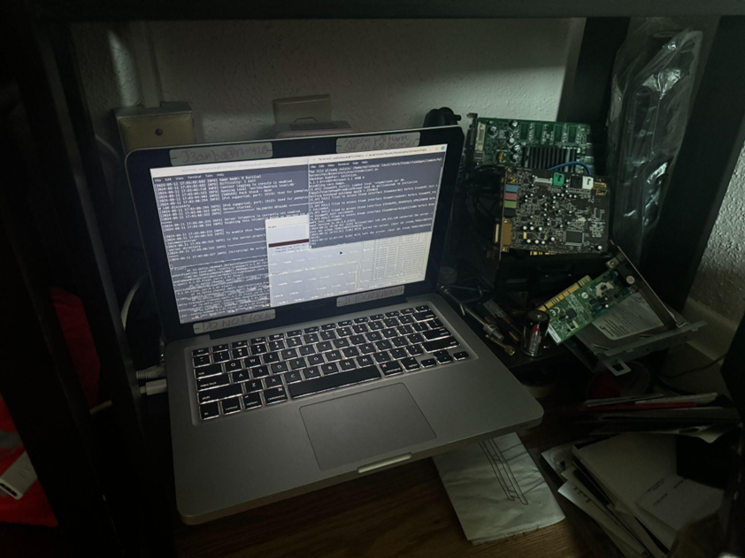

Servers are back up and running! Yay!
---------------------------------------
>Ports have been changed around in an effort to combat the issue of bots trying to join
>Chase the Skies update is now available on the Bedrock & Java Vanilla servers
>Bedrock crossplay does not currently work due to ViaVersion support being broken atm
>Java Modded server was kinda updated, but not really, IDK I'm stupid or something
IP & Ports List:
---------------------------------------
65.183.245.43:5555 (Java Vanilla)
65.183.245.43:19132 (Bedrock Vanilla)
65.183.245.43:44444 (Bedrock -> Java)
65.183.245.43:25565 (Java Modded)
65.183.245.43:42069 (Java April Fool's Update)
Links to JaMo Modpack:
Curse Forge
Modrinth
Super Trooper!!!!
